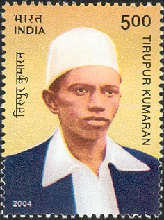

Tiruppur Kumaran
Home

About Tiruppur Kumaran
Born :4 October 1904[1]
Chennimalai, Coimbatore District, Madras Presidency, British India (present day Erode district, Tamil Nadu)
Died :11 January 1932 (aged 27)
Tiruppur, Coimbatore District, Madras Presidency, British India
Cause of death :Police brutality during march
Nationality :Indian
Tiruppur Kumaran also known as Kodi Kaatha Kumaran (4 October 1904 – 11 January 1932) was an
Indian
revolutionary and freedom fighter who participated in the Indian independence movement.
Kumaran was born as Kumaraswamy Mudaliyar. His parents were Nachimuthu Mudaliyar and Karuppaayi
Amma.He founded the Desa Bandhu Youth Association and led protests against the British. He died from
injuries sustained from a police assault on the banks of Noyyal River in Tiruppur during a protest march
against the British government on 11 January 1932. At the time of his death, he was holding the flag of the
Indian nationalists, which had been banned by the British giving rise to the epithet kodi Kaatha Kumaran in
Tamil which means "Kumaran who protected the flag".
Honors

Tiruppur Kumaran, 2004 Indian stamp
A commemorative stamp was issued by India post in October 2004 on his 100th birth
anniversary. A statue has been erected in Tirupur in his honor which is often used as a focal point
for public demonstrations